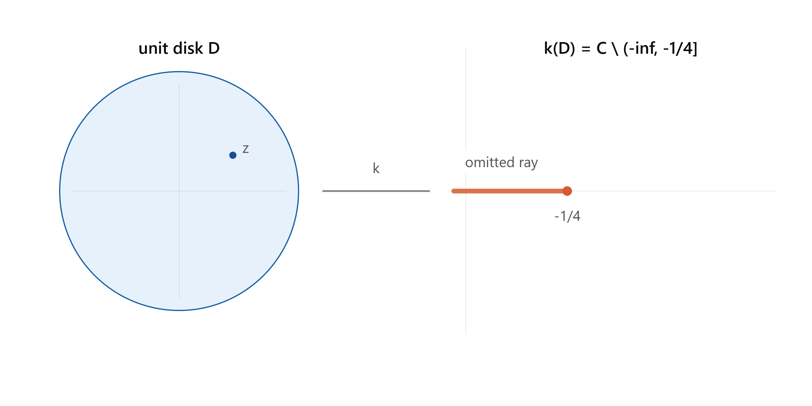
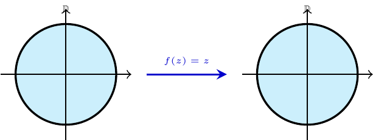
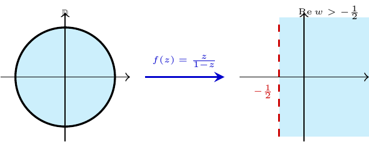
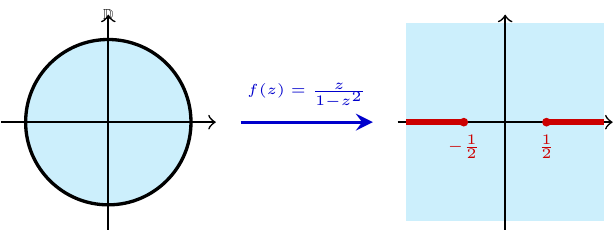
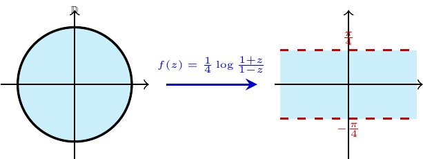
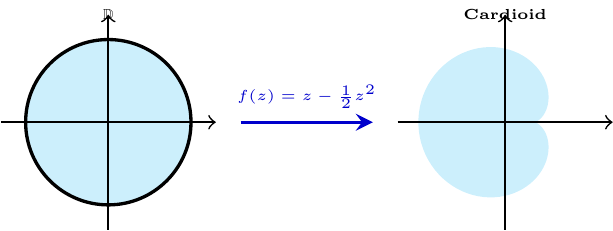

Chapter 6 Elementary Theory of Univalent Functions
6.1 Introduction - the class \(S\)
Definition 6.1 (Univalence)
- \(f\) is univalent (schlicht) on a domain \(D\) if \(f(z_1) = f(z_2) \implies z_1 = z_2\).
- For analytic \(f\), local univalence at \(z_0\) is equivalent to \(f'(z_0) \ne 0\). infinitesimally.
An analytic univalent map is automatically a conformal mapping (angle-preserving), since \(f'(z_0)\neq 0\) means the map looks like a rotation-and-scaling
The normalized class. \(S\) consists of \(f\) analytic and univalent on \(\mathbb D = \{|z|<1\}\) with \[f(0)=0,\qquad f'(0)=1,\] so every \(f\in S\) has a Taylor expansion \[f(z) = z + a_2 z^2 + a_3 z^3 + \cdots, \qquad |z|<1.\] By the Riemann mapping theorem, this normalized disk-based class is essentially universal: any univalent map of a simply connected domain (with \(\ge 2\) boundary points) onto another can be built from a member of \(S\) by pre- and post-composing with Möbius maps.
The Koebe function is the star example: \[k(z) = \frac{z}{(1-z)^2} = z + 2z^2 + 3z^3 + \cdots = \sum_{n=1}^\infty n z^n.\] To see its image, write \[k(z) = \frac{1}{4}\left(\left(\frac{1+z}{1-z}\right)^2 - 1\right).\] The Möbius map \(\zeta = \dfrac{1+z}{1-z}\) sends \(\mathbb D\) conformally onto the right half-plane \(\operatorname{Re}\zeta>0\). Squaring a right half-plane sweeps it around into the entire plane minus the nonpositive reals \((-\infty,0]\), and then \(\frac14(\zeta^2-1)\) shifts and scales that slit to \((-\infty,-\tfrac14]\). That’s exactly the picture in the diagram: \(k\) maps \(\mathbb D\) onto \(\mathbb C\) minus the ray \((-\infty,-1/4]\).

Example 6.1 ther examples in \(S\):
- \(f(z) = z\)
- \(f(z) = \dfrac{z}{1-z}\)
- \(f(z) = \dfrac{z}{1-z^2}\)
- \(f(z) = \dfrac{1}{4}\log\dfrac{1+z}{1-z}\)
- \(f(z) = z - \dfrac{1}{2}z^2\)





| \(f(z)\) | Image Domain | Diagram |
|---|---|---|
| \(z\) | \(\mathbb{D}\) itself | |
| \(z(1-z)^{-1}\) | Half-plane \(\operatorname{Re} w > -\frac{1}{2}\) | |
| \(z(1-z^2)^{-1}\) | Plane minus two rays \([\frac{1}{2},\infty)\) and \((-\infty,-\frac{1}{2}]\) | |
| \(\frac{1}{4}\log\frac{1+z}{1-z}\) | Horizontal strip \(\lvert\operatorname{Im} w\rvert < \pi/4\) | |
| \(z - \frac{1}{2}z^2 = \frac{1}{4}\big(1-(1-z)^2\big)\) | Interior of a cardioid |
\(S\) is not a vector space. The sum of two functions in \(S\) need not be univalent. See the following the example.
Example 6.2 \(\dfrac{z}{1-z} + \dfrac{z}{1+iz}\) has a critical point inside \(\mathbb D\). This is a good reminder that \(S\) is a geometric class (defined by injectivity), not an algebraic one.
Symmetries preserving \(S\). These are the standard moves you’ll use constantly:
- Conjugation: \(g(z) = \overline{f(\bar z)} \in S\).
- Rotation: \(g(z) = e^{-i\theta}f(e^{i\theta}z) \in S\).
- Dilation: \(g(z) = r^{-1}f(rz) \in S\) for \(0<r<1\).
- Disk automorphism: for \(|\zeta|<1\), \(g(z) = \dfrac{f\!\left(\frac{z+\zeta}{1+\bar\zeta z}\right) - f(\zeta)}{(1-|\zeta|^2)f'(\zeta)} \in S\). This is the workhorse move used in the proofs of the distortion and growth theorems below — it re-centers \(f\) at an arbitrary point \(\zeta\) while renormalizing back to class \(S\).
- Range transformation: if \(\psi\) is univalent on \(f(\mathbb D)\) with \(\psi(0)=0,\psi'(0)=1\), then \(\psi\circ f \in S\).
- Omitted-value transformation: if \(f\) omits the value \(w\), then \(g = \dfrac{wf}{w-f} \in S\) (this is used directly in the Koebe \(1/4\) theorem below).
- Square-root transformation: if \(f\in S\), then \[g(z) = \sqrt{f(z^2)} = z + \tfrac12 a_2 z^3 + \cdots \in S.\]
Why (7) is univalent — a nice small argument. Since \(f(w)=0\) only at \(w=0\), we can pick a single-valued branch \(g(z) = \sqrt{f(z^2)}\); \(g\) is automatically odd, \(g(-z)=-g(z)\). If \(g(z_1)=g(z_2)\), squaring gives \(f(z_1^2)=f(z_2^2)\), so \(z_1^2=z_2^2\) (univalence of \(f\)), i.e. \(z_1 = \pm z_2\). If \(z_1=-z_2\), then \(g(z_1) = g(z_2) = g(-z_1) = -g(z_1)\), forcing \(g(z_1)=0\), hence \(z_1=0=z_2\). Either way \(z_1=z_2\). \(\blacksquare\)
\(m\)-fold symmetric functions. \(S^{(m)}\subset S\) consists of functions with \(m\)-fold symmetry, \(f(z) = z + \sum_{k\ge1} a_{mk+1}z^{mk+1}\). The \(m\)-th root transform \(g(z) = \{f(z^m)\}^{1/m}\) sends \(S \to S^{(m)}\), and this correspondence is onto: every \(g\in S^{(m)}\) arises this way. (The square-root transformation above is the case \(m=2\).)
The exterior class \(\Sigma\). This is the natural companion class: functions \[g(z) = z + b_0 + \frac{b_1}{z} + \frac{b_2}{z^2}+\cdots\] univalent on \(\Delta = \{|z|>1\}\) except for a simple pole at \(\infty\) (residue \(1\)). Each \(g\in\Sigma\) maps \(\Delta\) onto the complement of some compact connected set \(E\).
- \(\Sigma'\subset\Sigma\): those \(g\) with \(0 \notin g(\Delta)\), i.e. \(g\) never vanishes. Any \(g\in\Sigma\) can be shifted into \(\Sigma'\) by adjusting \(b_0\) (a translation, which preserves univalence).
- Inversion, \(f\mapsto g\): for \(f\in S\), \[g(z) = \{f(1/z)\}^{-1} = z - a_2 + (a_2^2-a_3)\frac1z + \cdots \in \Sigma',\] and this is a bijection \(S \leftrightarrow \Sigma'\).
- \(\Sigma'\) is closed under a square-root transform \(G(z) = \sqrt{g(z^2)}\) — but (important caveat) this only works starting from \(\Sigma'\), not general \(\Sigma\): if \(g\) has a zero, \(g(z^2)=0\) somewhere creates a branch point and the square root can’t be made single-valued.
- \(\Sigma_0 \subset \Sigma\): the subclass with \(b_0=0\) (achievable by translation, though generally not simultaneously with membership in \(\Sigma'\)).
- \(\tilde\Sigma\): “full mappings,” those \(g\in\Sigma\) whose omitted set \(E\) has 2-dimensional Lebesgue measure zero.
6.2 The Area Theorem
This is the load-bearing result of the whole chapter — nearly everything downstream is a corollary.
Theorem 2.1 (Area Theorem, Gronwall 1914). If \(g \in \Sigma\), \(g(z) = z+b_0+\sum_{n\ge1}b_nz^{-n}\), then \[\sum_{n=1}^\infty n|b_n|^2 \le 1,\] with equality iff \(g \in \tilde\Sigma\).
Proof idea (this is why it’s called the “area” theorem). Fix \(r>1\) and let \(C_r\) be the image of \(|z|=r\) under \(g\); since \(g\) is univalent, \(C_r\) is a simple closed curve enclosing a region \(E_r \supset E\) (the omitted set). By Green’s theorem, the enclosed area is \[\text{area}(E_r) = \frac{1}{2i}\oint_{C_r} \bar w\,dw.\] Parametrize \(w=g(re^{i\theta})\) and expand: because \(g(z)=z+b_0+\sum b_n z^{-n}\), carrying out \(\bar w\,dw\) and integrating \(\theta\) from \(0\) to \(2\pi\) kills all cross terms by orthogonality of \(e^{ik\theta}\), leaving \[\text{area}(E_r) = \pi\Big(r^2 - \sum_{n=1}^\infty n|b_n|^2 r^{-2n}\Big), \qquad r>1.\] Since area is \(\ge 0\) for every \(r>1\), let \(r\downarrow 1\): the outer measure of \(E\) satisfies \[m(E) = \pi\Big(1 - \sum n|b_n|^2\Big) \ge 0,\] which is exactly the theorem. Equality \(m(E)=0\) is precisely membership in \(\tilde\Sigma\). \(\blacksquare\)
This is a genuinely lovely argument: you get a coefficient inequality out of nothing but “area can’t be negative.”
Corollary. \(|b_1|\le 1\), with equality iff \(g(z) = z+b_0+b_1/z\), \(|b_1|=1\) — mapping \(\Delta\) onto the complement of a line segment of length \(4\). (Equality in \(|b_1|^2 \le \sum n|b_n|^2 \le 1\) forces all other \(b_n=0\) and \(|b_1|=1\).)
Bieberbach’s Theorem (1916), via the corollary.
Theorem 2.2. If \(f\in S\), then \(|a_2|\le 2\), with equality iff \(f\) is a rotation of the Koebe function.
Proof. Chain the square-root transform and inversion: \(g(z) = \{f(1/z^2)\}^{-1/2} = z - \tfrac12 a_2 z^{-1} + \cdots \in \Sigma\). Its \(b_1\) coefficient is \(-a_2/2\), so the corollary gives \(|a_2/2|\le 1\), i.e. \(|a_2|\le 2\). Equality forces \(g(z) = z + b_0 + \frac{b_1}{z}\) with \(|b_1|=1\), and unwinding the transform shows this corresponds to \(f\) being a rotation \(e^{-i\theta}k(e^{i\theta}z)\) of the Koebe function. \(\blacksquare\)
Koebe’s One-Quarter Theorem — this is arguably the single most quoted fact in the subject.
Theorem 2.3. Every \(f\in S\) has range containing the disk \(|w|<\tfrac14\).
Proof. Suppose \(f\) omits a value \(w\). Apply the omitted-value transformation: \[g(z) = \frac{wf(z)}{w-f(z)} = z + \left(a_2+\frac1w\right)z^2+\cdots \in S.\] Bieberbach’s theorem applied to \(g\) gives \(\left|a_2+\dfrac1w\right|\le 2\). Combined with \(|a_2|\le 2\) (triangle inequality: \(\left|\frac1w\right| \le \left|a_2+\frac1w\right|+|a_2| \le 4\)), we get \(|w|\ge \tfrac14\). \(\blacksquare\)
The proof shows more: only the Koebe function and its rotations actually achieve \(|w|=\tfrac14\) (they’re the ones omitting a boundary point of the disk \(|w|<1/4\) exactly) — every other \(f\in S\) covers a strictly larger disk. Also worth noting: univalence is essential here, not just \(f(0)=0, f'(0)=1\) — \(f_n(z) = z(1+z/n)^2\) satisfies the normalization but omits values arbitrarily close to \(0\), since it’s not univalent.
6.3 Growth and Distortion Theorems
These translate the coefficient bound \(|a_2|\le2\) into pointwise geometric control on \(f\) itself.
Theorem 2.4 (the key technical estimate). For \(f\in S\), \(|z|=r<1\), \[\left|\frac{zf''(z)}{f'(z)} - \frac{2r^2}{1-r^2}\right| \le \frac{4r}{1-r^2}.\]
Proof sketch. Fix \(\zeta\in\mathbb D\) and apply the disk-automorphism symmetry (item 4 above) to build \(F\in S\) re-centered at \(\zeta\). Expanding \(F\)’s second Taylor coefficient in terms of \(f\)’s Taylor coefficients at \(\zeta\) gives an expression \(A_2(\zeta) = \frac12(1-|\zeta|^2)\dfrac{f''(\zeta)}{f'(\zeta)} - \bar\zeta\). Bieberbach’s theorem bounds \(|A_2(\zeta)|\le2\); simplifying and relabeling \(\zeta \to z\) gives the stated inequality. \(\blacksquare\)
Splitting into real/imaginary parts of this one inequality produces three classical theorems by integrating along radii — this is a nice piece of technique worth internalizing (it’s a recurring move in the subject: one sharp pointwise bound on a logarithmic-derivative-type quantity, then radial integration, gives sharp global bounds).
Distortion Theorem 2.5. Take real parts: \(\operatorname{Re}\left(\dfrac{zf''}{f'}\right)\) is sandwiched, and since \(\operatorname{Re}\dfrac{zf''}{f'} = r\dfrac{\partial}{\partial r}\log|f'(re^{i\theta})|\) (using a branch of \(\log f'\) vanishing at \(0\)), integrating in \(r\) gives \[\frac{1-r}{(1+r)^3} \le |f'(z)| \le \frac{1+r}{(1-r)^3}, \qquad |z|=r,\] with equality (for \(z\ne0\)) iff \(f\) is a rotation of \(k\). Both bounds are attained by \(k'(z) = \dfrac{1+z}{(1-z)^3}\) itself.
Growth Theorem 2.6. Integrating \(f(z) = \int_0^z f'\) radially and applying the distortion theorem along the way: \[\frac{r}{(1+r)^2} \le |f(z)| \le \frac{r}{(1-r)^2}, \qquad |z|=r,\] again with equality only for rotations of the Koebe function. The lower bound is the subtler direction: if \(|f(z)|<\tfrac14\), the Koebe \(1/4\) theorem guarantees the whole segment from \(0\) to \(f(z)\) lies in \(f(\mathbb D)\), so you can integrate \(f'\) along its (univalent) preimage arc and apply the distortion theorem there.
Rotation theorem (imaginary part). Taking imaginary parts of Theorem 2.4 instead and integrating gives the (non-sharp) bound \[|\arg f'(z)| \le 2\log\frac{1+r}{1-r}.\] The genuinely sharp rotation theorem, \[|\arg f'(z)| \le \begin{cases} 4\arcsin r, & r\le 1/\sqrt2,\\[4pt] \pi + \log\dfrac{r^2}{1-r^2}, & r>1/\sqrt2,\end{cases}\] lies much deeper (needs Loewner’s method, Chapter 3) — and the fact that the sharp bound has different functional forms on either side of \(r=1/\sqrt2\) is flagged as one of the striking phenomena of the theory.
Theorem 2.7 (combined growth/distortion, for \(zf'/f\)). For \(f\in S\), \[\frac{1-r}{1+r} \le \left|\frac{zf'(z)}{f(z)}\right| \le \frac{1+r}{1-r}.\] Note this does not follow by naively dividing the growth and distortion bounds — the proof has to go back to the auxiliary function \(F\) from Theorem 2.4’s construction and use the growth theorem on \(F\) at the point \(-\zeta\). Equality, again, only for rotations of \(k\), for which \(\dfrac{zk'(z)}{k(z)} = \dfrac{1+z}{1-z}\) exactly.
6.4 Coefficient Estimates
The Bieberbach Conjecture. Since \(k\) has \(n\)-th coefficient exactly \(n\), and \(|a_2|\le2\) with the same extremal function, it’s natural to conjecture \(|a_n|\le n\) for all \(f\in S\), with equality only for rotations of \(k\). At the time this book was written, this was proven only for small \(n\) — it’s worth flagging for you: de Branges proved the full conjecture in 1985, after this book’s publication (using Loewner theory plus special-function/hypergeometric estimates related to Askey–Gasper). Duren’s book predates that, so what follows is the state of the art before de Branges.
Finiteness of \(A_n = \sup_{f\in S}|a_n|\) follows either from compactness of \(S\) in the topology of locally uniform convergence (Montel-type argument, plus continuity of \(a_n\) as a functional), or crudely from Cauchy’s estimate combined with the growth theorem, giving \(A_n \le Cn^2\).
Littlewood’s Theorem (1925). \(|a_n| \le en\) for all \(f\in S\), \(n\ge2\) — the correct order of magnitude, proved by completely elementary means.
The proof rests on an integral-means lemma. Define \(M_p(r,f) = \left(\dfrac{1}{2\pi}\int_0^{2\pi}|f(re^{i\theta})|^p\,d\theta\right)^{1/p}\).
Lemma. For \(f\in S\), \(\;M_1(r,f) \le \dfrac{r}{1-r}\), \(0<r<1\).
Proof. Let \(h(z) = \sqrt{f(z^2)} = z + e_3z^3+e_5z^5+\cdots\) (the square-root transform, an odd function in \(S\)). By the growth theorem applied to \(f\) at the point \(z^2\) (modulus \(r^2\)), \(|f(z^2)| \le r^2/(1-r^2)^2\), so \[|h(z)| \le \frac{r}{1-r^2}, \qquad |z|=r.\] So \(h\) maps \(|z|<r\) into the disk \(|w| < r/(1-r^2)\); the (multiplicity-weighted) area of the image is \[A_r = \iint_{|z|<r} |h'(z)|^2\,dA = \pi\sum_n n|e_n|^2 r^{2n} \;\le\; \pi \frac{r^2}{(1-r^2)^2}.\] Dividing by \(r\) and integrating from \(0\) to \(r\): \[\sum_n |e_n|^2 r^{2n} \le \frac{r^2}{1-r^2}.\] By Parseval, the left side is \(M_2(r,h)^2\), and since \(|h(z)|^2=|f(z^2)|\), a change of variable shows \(M_2(r,h)^2 = M_1(r^2,f)\). Relabeling \(r^2\to r\) gives \(M_1(r,f)\le r/(1-r)\). \(\blacksquare\)
Deriving Littlewood’s theorem from the lemma. Cauchy’s formula gives \(|a_n| \le r^{-n}M_1(r,f) \le \dfrac{r^{1-n}}{1-r}\). Minimizing over \(r\) at \(r=1-1/n\): \[|a_n| \le n\left(1-\frac1n\right)^{1-n} \longrightarrow en \quad\text{(since $(1-1/n)^{-n}\to e$).}\]
How sharp is this? Not very — even in principle, this method (Cauchy estimate + integral means) can’t beat \(\tfrac e2 n\), because the true extremal is the Koebe function, whose own integral mean can be computed in closed form: \[M_1(r,k) = \frac{1}{2\pi}\int_0^{2\pi}\frac{r\,d\theta}{|1-re^{i\theta}|^2} = \frac{r}{1-r^2}\] (a Poisson-kernel identity), which is smaller than Littlewood’s elementary bound \(r/(1-r)\) by essentially a factor of \(2\) near \(r=1\) (since \(1-r^2\approx 2(1-r)\)). It took until Baernstein (1973) — using his theory of “star-functions” — to prove the sharp statement \(M_p(r,f)\le M_p(r,k)\) for all \(f\in S\) and all \(0<p<\infty\), matching the Koebe function exactly. That recovers the optimal constant \(\tfrac e2\) from this style of argument (though it still falls short of de Branges’s exact \(n\)).
Application: arclength of image circles. Let \(L_r(f)\) be the length of the image of \(|z|=r\) under \(f\), i.e. \(L_r(f)=\int_0^{2\pi}|f'(re^{i\theta})|\,r\,d\theta\).
Theorem 2.9. \(L_r(f) \le \dfrac{2\pi r(1+r)}{(1-r)^2}\).
Proof. Write \(|f'(z)|\,r = \left|\dfrac{zf'(z)}{f(z)}\right|\cdot|f(z)|\) (using \(|z|=r\)), bound the first factor by Theorem 2.7’s upper bound \(\tfrac{1+r}{1-r}\), and integrate: \[L_r(f) \le \frac{1+r}{1-r}\int_0^{2\pi}|f(re^{i\theta})|\,d\theta = \frac{1+r}{1-r}\cdot 2\pi M_1(r,f) \le \frac{1+r}{1-r}\cdot 2\pi\cdot\frac{r}{1-r} = \frac{2\pi r(1+r)}{(1-r)^2}. \blacksquare\]
This is again “very nearly sharp” but not sharp; using Baernstein’s inequality \(M_1(r,f)\le \frac{r}{1-r^2}\) in place of the elementary lemma improves it to \[L_r(f) \le \frac{2\pi r}{(1-r)^2}.\] (The \((1+r)\) factor cancels exactly against the extra factor gained from the sharper \(M_1\) bound.) The genuinely sharp bound for \(L_r(f)\) over all of \(S\) is still unknown in general; Clunie and Duren later showed \(L_r(f)\le L_r(k)\) holds within the subclass of close-to-convex functions (§2.6).
6.5 Where the excerpt trails off
The chapter then pivots (§2.5) into geometrically-defined subclasses — convex functions \(C\) (image is a convex domain) and starlike functions \(S^*\) (image starlike w.r.t. \(0\)), with \(C \subset S^* \subset S\), and the Koebe function itself is starlike but not convex. This sets up the class \(P\) of functions with positive real part (Carathéodory functions) via the Herglotz/Poisson–Stieltjes representation — the tool that will let you prove the Bieberbach conjecture sharply within these two subclasses, which is presumably where the excerpt continues next.